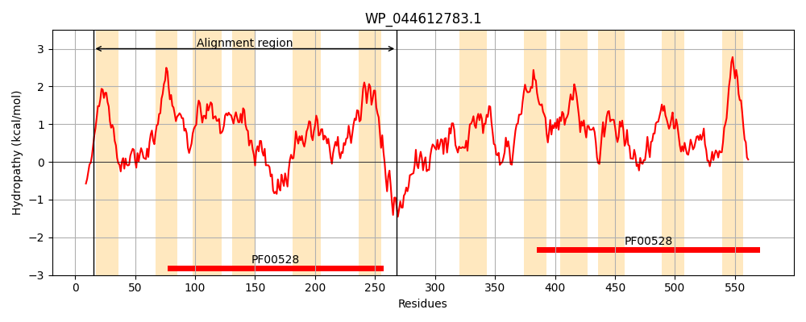
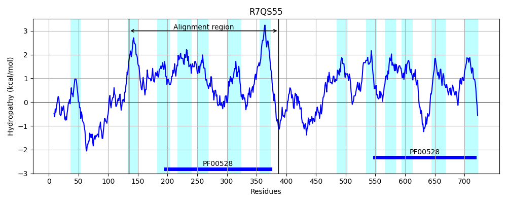
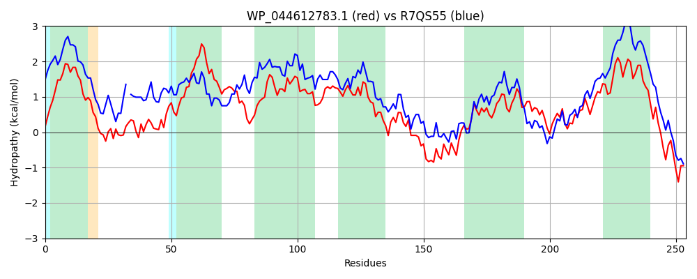

Hit Accession: R7QS55
Hit TCID: 3.A.1.17.9
Hit Description: gnl|BL_ORD_ID|19811 gnl|TC-DB|R7QS55|3.A.1.17.9 Stackhouse genomic scaffold, scaffold_628 OS=Chondrus crispus GN=CHC_T00000780001 PE=3 SV=1
Mach Len: 254
e:0.000000
Query TMS Count : 12
Hit TMS Count: 13
TMS-Overlap Score: 8.600000
Predicted Substrates:None
BLAST Alignment:
Score: 440 , Bit scores: 174 bits, E-value: 1.3e-46, Alignment length: 254, Percentage identity: 32
Query: 15 LNDVVVCFIFMASIASFIYGWQGMHSVFNGRDLPVISLDYHVLPYYTLRTTMRLVIGLFYSMLFSIVFAVLAAKYAPMRRVILPFVNFMESVPLVGFLTFTTAFFLGLYPHSVMGLEGLAIFAVFTAQAWNMMLTLYQTLRVVPNELVEAADAFRYNPWQKFWRLGFIYSFPGLLWNTMVSQSAAWFALIASEMLTVGNGSTNLPGVGSYIGIALQDGSVPGVIRGVLALIVNIVIFDQLLFRPLVRYAHQFKY 268
L DVV+ +A ++ + + + S L VIS +LP Y ++ +R+V+ +S+LFS+ +A LA + ++++ ++ ++S+PL+ FL + L+P + +GLE A+ +FT+ AWNM+L YQ LR +P +LV+ A FR + W +FW L L+WN+++S + WF LI+ E +GN LPG+GS++ +A + P ++ G++ ++ IV+ D L++RPL+ ++ +F Y
Sbjct: 135 LTDVVIVLAIVALVSGLVLTTRNLFSAAPYSSL-VISTSLSLLPAYAAQSLVRMVVAYAFSLLFSLGYAYLAYRVRFAAKLLILLIDVLQSIPLLSFLPGVVLGLIALFPDARIGLELAAVLLLFTSMAWNMLLAFYQALRCIPTDLVDVAKTFRLSAWNRFWTLELPAGAGPLVWNSVISVAGGWFFLISIESFELGNRDFKLPGLGSFLAVAAETADYPAIVAGLVVVVAIIVLIDFLIWRPLIAWSSKFNY 387 | Protein Hydropathy Plots: |
|---|
|  |  |
Pairwise Alignment-Hydropathy Plot:
|
|---|
|  |